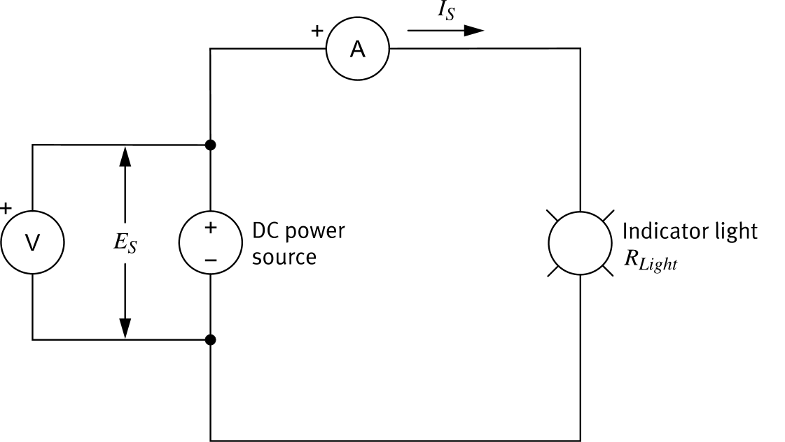

Worked Examples


Find Current
Given
ES = 24 V, R = 50 Ω
Formula
I =
ER
Sub
I =
24 V50 Ω
Answer
I = 0.48 A
Find Voltage
Given
IS = 0.8 A, R = 62.5 Ω
Formula
E = I × R
Sub
E = 0.8 A × 62.5 Ω
Answer
E = 50 V
Find Resistance
Given
ES = 100 V, IS = 0.25 A
Formula
R =
EI
Sub
R =
100 V0.25 A
Answer
R = 400 Ω
Key Takeaways
Resistance
Opposition to current flow. Measured in ohms (Ω) with an ohmmeter connected in parallel.
Conductors
Low-R materials (metals, copper) that allow current to flow easily.
Insulators
High-R materials (glass, plastic, ceramic) that block current flow.
Ohm's Law
I = E/R · E = IR · R = E/I
Current ∝ voltage for constant R.
Power
P = EI (watts). Combined with Ohm's law: P = E²/R or P = I²R.
Faults
Short circuit:
R ≈ 0, dangerously high I.
Open circuit:
R = ∞, I = 0 A.